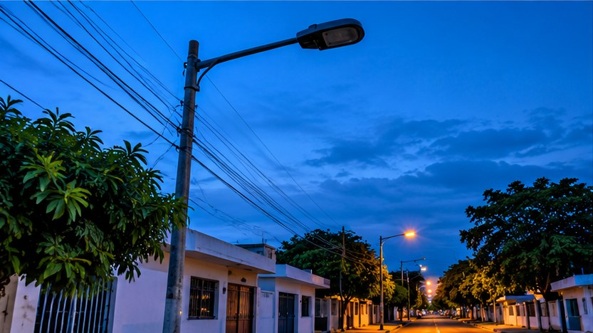
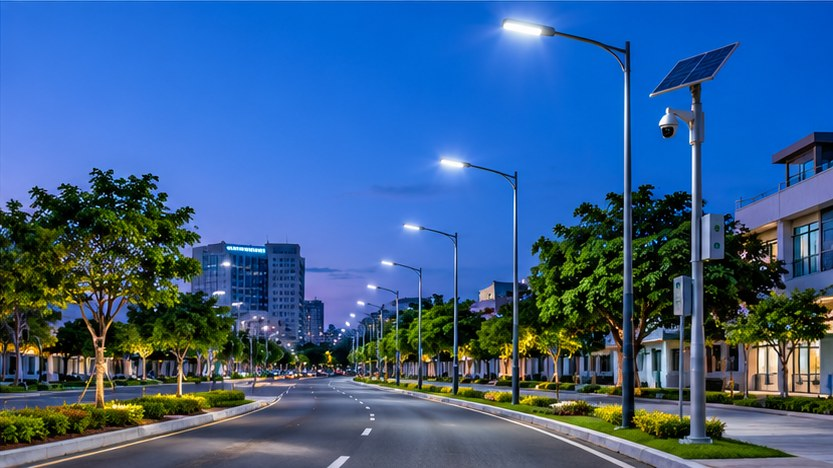

01 · NUESTRO ENTORNO
Reporta baches y fallas en el alumbrado público. Tu reporte ayuda a identificar los puntos críticos y a construir una ciudad que responde.
RIOHACHA · LA GUAJIRA
!⌁
Imágenes ilustrativas de los retos urbanos y de la visión de una ciudad conectada.



La plataforma organiza reportes georreferenciados para facilitar la identificación de puntos críticos y, a futuro, integrar sensores IoT y analítica de datos.
Cuéntanos qué sucede. Entre más precisa sea la información, más útil será el reporte.
Consulta los reportes registrados y su estado actual.
Un resumen de las incidencias registradas en el prototipo.
La información histórica puede ayudar a identificar zonas críticas, priorizar mantenimiento y, en una futura etapa, integrar sensores IoT en luminarias inteligentes.
Actualiza el estado de los reportes recibidos en este navegador.
| Reporte | Tipo | Sector | Fecha | Estado | Acción |
|---|
Este panel no tiene autenticación ni conexión con una entidad pública. Es una vista demostrativa para el proyecto académico.